Warning: package 'readr' was built under R version 4.3.3
library(dplyr)
Attaching package: 'dplyr'
The following objects are masked from 'package:stats':
filter, lag
The following objects are masked from 'package:base':
intersect, setdiff, setequal, union
library(skimr)
Warning: package 'skimr' was built under R version 4.3.3
f <-"https://raw.githubusercontent.com/difiore/ada-datasets/refs/heads/main/AVONETdataset1.csv"d <-read_csv(f, col_names =TRUE)
Rows: 11009 Columns: 37
── Column specification ────────────────────────────────────────────────────────
Delimiter: ","
chr (13): Species1, Family1, Order1, Avibase.ID1, Mass.Source, Mass.Refs.Oth...
dbl (24): Sequence, Total.individuals, Female, Male, Unknown, Complete.measu...
ℹ Use `spec()` to retrieve the full column specification for this data.
ℹ Specify the column types or set `show_col_types = FALSE` to quiet this message.
Make boxplots of log(Mass) in relation to Trophic.Level and Migration behavior type. For each plot, drop from the visualization all species records where the categorical variable of interest is missing from the dataset. Also, you will want to convert the variable Migration (which is scored as a number: “1”, “2”, or “3”) from class numeric to either being classified as a factor or as a character (string) variable.
library(dplyr)library(ggplot2)
Warning: package 'ggplot2' was built under R version 4.3.3
d_subset <- d |>filter(!is.na(Trophic.Level), !is.na(Migration))d_subset <- d_subset |>mutate(Migration =as.factor(Migration))ggplot(d_subset, aes(x = Trophic.Level, y =log(Mass))) +geom_boxplot() +labs(title ="Boxplot of log(Mass) by Trophic Level",x ="Trophic Level",y ="log(Mass)")
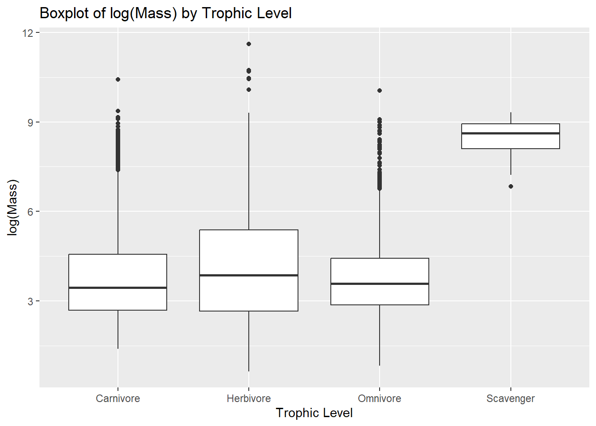
ggplot(d_subset, aes(x = Migration, y =log(Mass))) +geom_boxplot() +labs(title ="Boxplot of log(Mass) by Migration",x ="Migration",y ="log(Mass)")
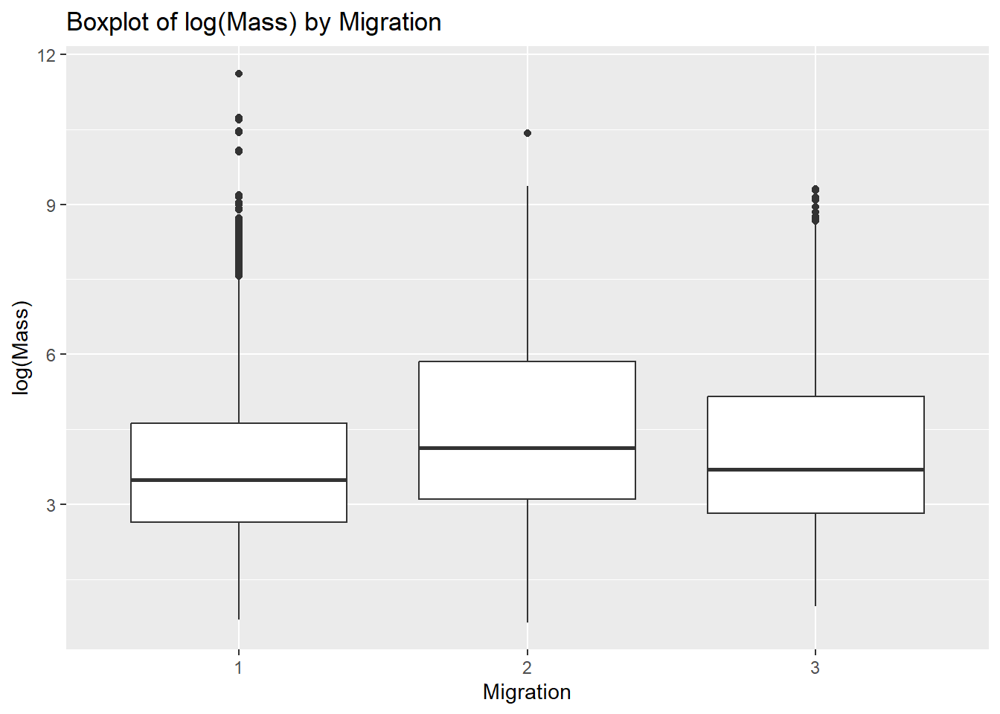
Step 2
Run linear models using the lm() function to look at the relationship between log(Mass) and Trophic.Level and between log(Mass) and Migration.
lm_trophic <-lm(log(Mass) ~ Trophic.Level, data = d_subset)lm_migration <-lm(log(Mass) ~ Migration, data = d_subset)summary(lm_trophic)
Call:
lm(formula = log(Mass) ~ Trophic.Level, data = d_subset)
Residuals:
Min 1Q Median 3Q Max
-3.4230 -1.1559 -0.3047 0.9004 7.5525
Coefficients:
Estimate Std. Error t value Pr(>|t|)
(Intercept) 3.80916 0.01970 193.354 < 2e-16 ***
Trophic.LevelHerbivore 0.25566 0.03410 7.498 6.96e-14 ***
Trophic.LevelOmnivore 0.01410 0.04122 0.342 0.732
Trophic.LevelScavenger 4.63107 0.34467 13.436 < 2e-16 ***
---
Signif. codes: 0 '***' 0.001 '**' 0.01 '*' 0.05 '.' 0.1 ' ' 1
Residual standard error: 1.539 on 10982 degrees of freedom
Multiple R-squared: 0.02091, Adjusted R-squared: 0.02064
F-statistic: 78.18 on 3 and 10982 DF, p-value: < 2.2e-16
summary(lm_migration)
Call:
lm(formula = log(Mass) ~ Migration, data = d_subset)
Residuals:
Min 1Q Median 3Q Max
-3.8924 -1.1769 -0.3088 0.9152 7.8427
Coefficients:
Estimate Std. Error t value Pr(>|t|)
(Intercept) 3.77457 0.01636 230.710 < 2e-16 ***
Migration2 0.75971 0.04731 16.059 < 2e-16 ***
Migration3 0.37647 0.05155 7.303 3.02e-13 ***
---
Signif. codes: 0 '***' 0.001 '**' 0.01 '*' 0.05 '.' 0.1 ' ' 1
Residual standard error: 1.535 on 10983 degrees of freedom
Multiple R-squared: 0.02563, Adjusted R-squared: 0.02546
F-statistic: 144.5 on 2 and 10983 DF, p-value: < 2.2e-16
Examine the output of the resultant linear models. Is log(Mass) associated with either Trophic.Level or Migration category? That is, in the global test of significance, is the F statistic large enough to reject the null hypothesis of an F value of zero?
summary(lm_trophic)
Call:
lm(formula = log(Mass) ~ Trophic.Level, data = d_subset)
Residuals:
Min 1Q Median 3Q Max
-3.4230 -1.1559 -0.3047 0.9004 7.5525
Coefficients:
Estimate Std. Error t value Pr(>|t|)
(Intercept) 3.80916 0.01970 193.354 < 2e-16 ***
Trophic.LevelHerbivore 0.25566 0.03410 7.498 6.96e-14 ***
Trophic.LevelOmnivore 0.01410 0.04122 0.342 0.732
Trophic.LevelScavenger 4.63107 0.34467 13.436 < 2e-16 ***
---
Signif. codes: 0 '***' 0.001 '**' 0.01 '*' 0.05 '.' 0.1 ' ' 1
Residual standard error: 1.539 on 10982 degrees of freedom
Multiple R-squared: 0.02091, Adjusted R-squared: 0.02064
F-statistic: 78.18 on 3 and 10982 DF, p-value: < 2.2e-16
summary(lm_migration)
Call:
lm(formula = log(Mass) ~ Migration, data = d_subset)
Residuals:
Min 1Q Median 3Q Max
-3.8924 -1.1769 -0.3088 0.9152 7.8427
Coefficients:
Estimate Std. Error t value Pr(>|t|)
(Intercept) 3.77457 0.01636 230.710 < 2e-16 ***
Migration2 0.75971 0.04731 16.059 < 2e-16 ***
Migration3 0.37647 0.05155 7.303 3.02e-13 ***
---
Signif. codes: 0 '***' 0.001 '**' 0.01 '*' 0.05 '.' 0.1 ' ' 1
Residual standard error: 1.535 on 10983 degrees of freedom
Multiple R-squared: 0.02563, Adjusted R-squared: 0.02546
F-statistic: 144.5 on 2 and 10983 DF, p-value: < 2.2e-16
log(Mass) is associated with both the Trophic.Level and Migration category, as the f-stat is large in both (78.18 and 144.5 respecively) and is significant in both scenarios, as the p value is <0.05 in both circumstances (2.2e-16 in both)
Given the regression coefficients returned for your Migration model, which Migration categor(ies) are different than the reference level? What level is the reference level? Relevel and assess differences among the remaining pair of Migration categories.
The reference level is Migration1. Both Migration2 and Migration3 are significantly different than the reference level (p value of 2e-16 and 3.02e-13 respectively)
d_subset$Migration <-relevel(d_subset$Migration, ref ="2")lm_migration_relevel2 <-lm(log(Mass) ~ Migration, data = d_subset)summary(lm_migration_relevel2)
Call:
lm(formula = log(Mass) ~ Migration, data = d_subset)
Residuals:
Min 1Q Median 3Q Max
-3.8924 -1.1769 -0.3088 0.9152 7.8427
Coefficients:
Estimate Std. Error t value Pr(>|t|)
(Intercept) 4.53428 0.04439 102.149 < 2e-16 ***
Migration1 -0.75971 0.04731 -16.059 < 2e-16 ***
Migration3 -0.38324 0.06603 -5.804 6.67e-09 ***
---
Signif. codes: 0 '***' 0.001 '**' 0.01 '*' 0.05 '.' 0.1 ' ' 1
Residual standard error: 1.535 on 10983 degrees of freedom
Multiple R-squared: 0.02563, Adjusted R-squared: 0.02546
F-statistic: 144.5 on 2 and 10983 DF, p-value: < 2.2e-16
d_subset$Migration <-relevel(d_subset$Migration, ref ="3")lm_migration_relevel3 <-lm(log(Mass) ~ Migration, data = d_subset)summary(lm_migration_relevel3)
Call:
lm(formula = log(Mass) ~ Migration, data = d_subset)
Residuals:
Min 1Q Median 3Q Max
-3.8924 -1.1769 -0.3088 0.9152 7.8427
Coefficients:
Estimate Std. Error t value Pr(>|t|)
(Intercept) 4.15104 0.04889 84.909 < 2e-16 ***
Migration2 0.38324 0.06603 5.804 6.67e-09 ***
Migration1 -0.37647 0.05155 -7.303 3.02e-13 ***
---
Signif. codes: 0 '***' 0.001 '**' 0.01 '*' 0.05 '.' 0.1 ' ' 1
Residual standard error: 1.535 on 10983 degrees of freedom
Multiple R-squared: 0.02563, Adjusted R-squared: 0.02546
F-statistic: 144.5 on 2 and 10983 DF, p-value: < 2.2e-16
Releveled for 2: Both are significantly different ( pvalue of 2e-16 and 6.67e-9 for Migration 1 and 3)
Releveled for 3: Both are significantly different ( pvalue of 6.67e-9 and 3.02e-13 for Migration 2 and 1)
Step 3
Conduct a post-hoc Tukey Honest Significant Differences test to also evaluate which Migration categories differ “significantly” from one another (see Module 20).
library(mosaic)
Warning: package 'mosaic' was built under R version 4.3.3
Registered S3 method overwritten by 'mosaic':
method from
fortify.SpatialPolygonsDataFrame ggplot2
The 'mosaic' package masks several functions from core packages in order to add
additional features. The original behavior of these functions should not be affected by this.
Attaching package: 'mosaic'
The following object is masked from 'package:Matrix':
mean
The following object is masked from 'package:ggplot2':
stat
The following object is masked from 'package:skimr':
n_missing
The following objects are masked from 'package:dplyr':
count, do, tally
The following objects are masked from 'package:stats':
binom.test, cor, cor.test, cov, fivenum, IQR, median, prop.test,
quantile, sd, t.test, var
The following objects are masked from 'package:base':
max, mean, min, prod, range, sample, sum
This shows that all adjusted p values are 0, meaning that all 3 groups are significantly different from one another.
Step 4
Use a permutation approach to inference to generate a null distribution of F statistic values for the model of log(Mass) in relation to Trophic.Level and calculate a p value for your original F statistic. You can do this either by programming your own permutation test (e.g., by shuffling values for the predictor or response variable among observations and calculating an F statistic for each replicate) or by using the {infer} workflow and setting calculate(stat="F").
Create the following two new variables and add them to AVONET dataset:
Relative beak length, which you should calculate as the residual of log(Beak.Length_Culmen) on log(Mass).
Relative tarsus length, which you should calculate as the residual of log(Tarsus.Length) on log(Mass).
lm_relative_beak <-lm(log(Beak.Length_Culmen) ~log(Mass), data = d_subset)d_subset$Relative_Beak_Length <-resid(lm_relative_beak)lm_relative_tarsus <-lm(log(Tarsus.Length) ~log(Mass), data = d_subset)d_subset$Relative_Tarsus_Length <-resid(lm_relative_tarsus)
Step 2
Make a boxplot or violin plot of your new relative tarsus length variable in relation to Primary.Lifestyle and of your new relative beak length variable in relation to Trophic.Niche
library(ggplot2)ggplot(d_subset, aes(x = Primary.Lifestyle, y = Relative_Tarsus_Length)) +geom_violin() +labs(title ="Relative Tarsus Length by Primary Lifestyle",x ="Primary Lifestyle",y ="Relative Tarsus Length")
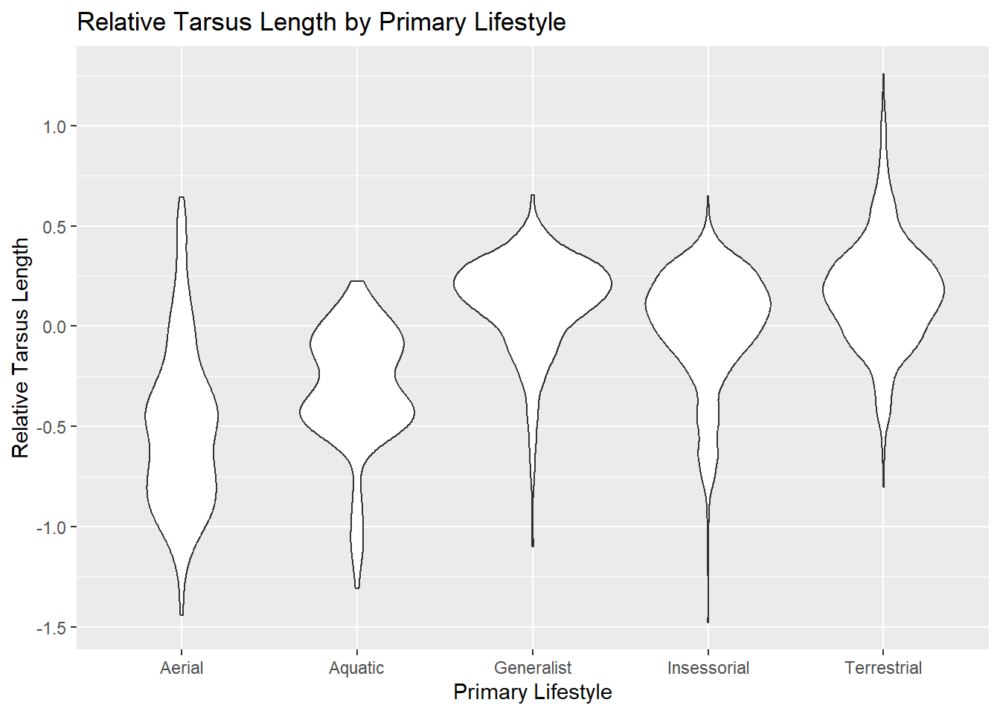
ggplot(d_subset, aes(x = Primary.Lifestyle, y = Relative_Tarsus_Length)) +geom_boxplot() +labs(title ="Relative Tarsus Length by Primary Lifestyle",x ="Primary Lifestyle",y ="Relative Tarsus Length")
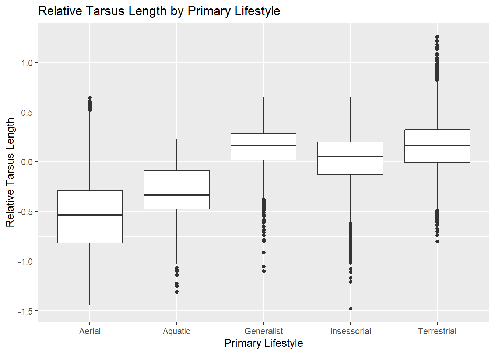
ggplot(d_subset, aes(x = Trophic.Niche, y = Relative_Beak_Length)) +geom_violin() +# To create a violin plotlabs(title ="Relative Beak Length by Trophic Niche",x ="Trophic Niche",y ="Relative Beak Length")
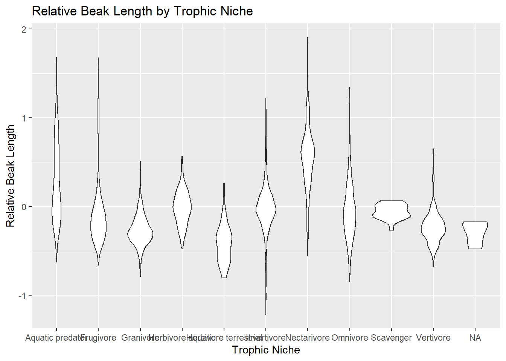
ggplot(d_subset, aes(x = Trophic.Niche, y = Relative_Beak_Length)) +geom_boxplot() +# To create a boxplotlabs(title ="Relative Beak Length by Trophic Niche",x ="Trophic Niche",y ="Relative Beak Length")
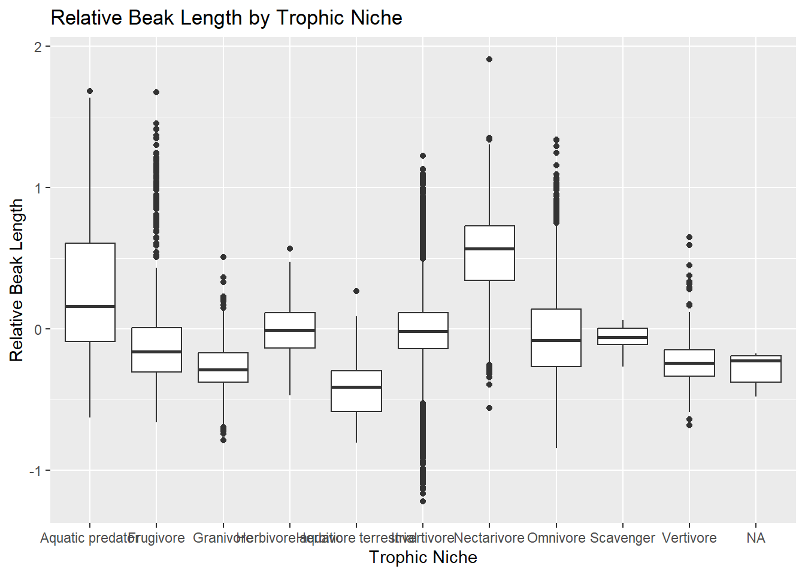
Step 3
Run ANOVA analyses to look at the association between geographic range size and the variable Migration. You should first drop those observations for which Migration is not scored and also look at the distribution of the variable Range.Size to decide whether and how it might need to be transformed. Based on the global model, is range size associated with form of migration? How much of the variance in your measure of range size is associated with Migration behavior style?
#Already dropped NA migration values in d_subsetlibrary(ggplot2)ggplot(d_subset, aes(x = Range.Size)) +geom_histogram(binwidth =1) +geom_density(alpha =0.3) +labs(title ="Distribution of Range.Size", x ="Range Size", y ="Frequency")
Warning: Removed 49 rows containing non-finite outside the scale range
(`stat_bin()`).
Warning: Computation failed in `stat_bin()`.
Caused by error in `bin_breaks_width()`:
! The number of histogram bins must be less than 1,000,000.
ℹ Did you make `binwidth` too small?
Warning: Removed 49 rows containing non-finite outside the scale range
(`stat_density()`).
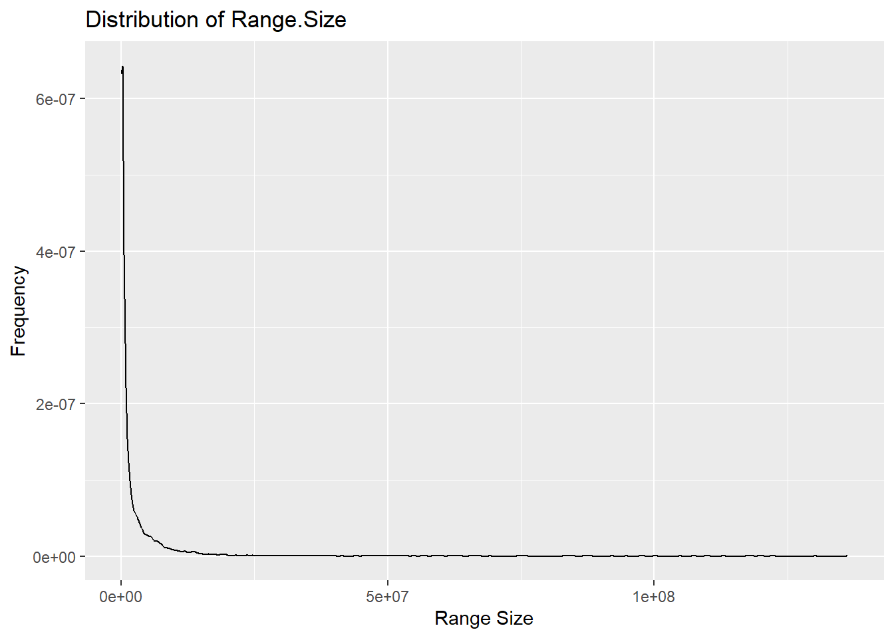
ggplot(d_subset, aes(x =log(Range.Size +1))) +geom_histogram(binwidth =1) +geom_density(alpha =0.3) +labs(title ="Distribution of Range.Size", x ="Range Size", y ="Frequency")
Warning: Removed 49 rows containing non-finite outside the scale range (`stat_bin()`).
Removed 49 rows containing non-finite outside the scale range
(`stat_density()`).
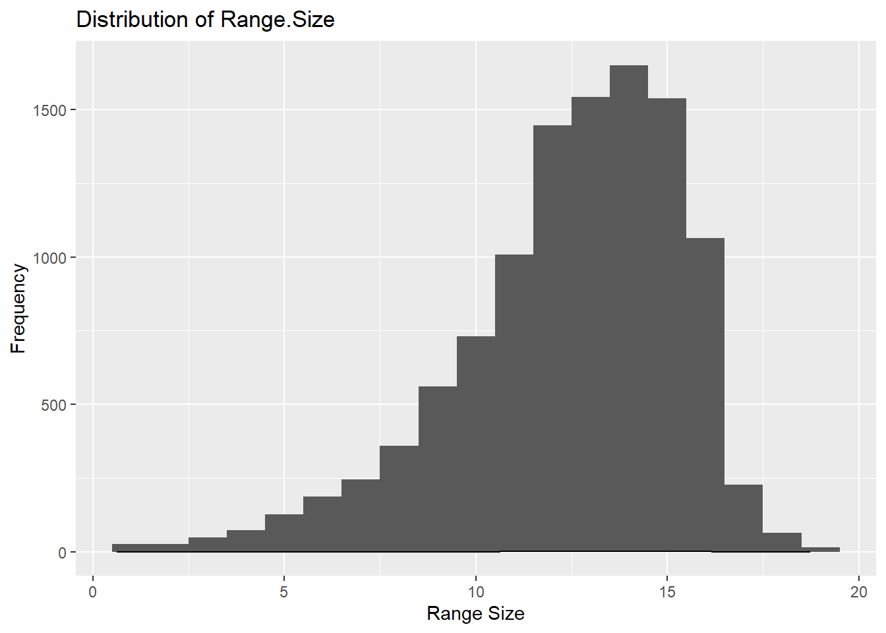
#RangeSizes needs log transformationlibrary(dplyr)d_subset <- d_subset %>%mutate(Log_Range_Size =log(Range.Size +1)) ggplot(d_subset, aes(x = Log_Range_Size)) +geom_histogram(binwidth =1) +geom_density(alpha =0.3) +labs(title ="Distribution of Range.Size", x ="Range Size", y ="Frequency")
Warning: Removed 49 rows containing non-finite outside the scale range (`stat_bin()`).
Removed 49 rows containing non-finite outside the scale range
(`stat_density()`).
Call:
lm(formula = Log_Range_Size ~ Migration, data = d_subset)
Residuals:
Min 1Q Median 3Q Max
-13.8692 -1.4542 0.4336 1.9742 5.9250
Coefficients:
Estimate Std. Error t value Pr(>|t|)
(Intercept) 12.03590 0.02966 405.75 <2e-16 ***
Migration3 2.51637 0.09355 26.90 <2e-16 ***
Migration2 1.78367 0.08584 20.78 <2e-16 ***
---
Signif. codes: 0 '***' 0.001 '**' 0.01 '*' 0.05 '.' 0.1 ' ' 1
Residual standard error: 2.778 on 10934 degrees of freedom
(49 observations deleted due to missingness)
Multiple R-squared: 0.08726, Adjusted R-squared: 0.08709
F-statistic: 522.6 on 2 and 10934 DF, p-value: < 2.2e-16
Range size is associated with form of migration, as shown by the 2.2e-16 p-values above.
However the R2 value (0.08726) seems to indicate that little of the variance in range size is due to form of migration.
Given the regression coefficients returned in the output of the model, which Migration categor(ies) are different than the reference level? What level is the reference level? Relevel and assess differences among the remaining pair of Migration categories. Also conduct a post-hoc Tukey Honest Significant Differences test to also evaluate which Migration categories differ “significantly” from one another (see Module 20).
The p values of all migration levels is 2e-16, so they all differ significantly from the reference level, when Migration1 is defined as the reference level.
d_subset$Migration <-relevel(d_subset$Migration, ref ="1")lm_migration_relevel1 <-lm(Log_Range_Size ~ Migration, data = d_subset)summary(lm_migration_relevel1)
Call:
lm(formula = Log_Range_Size ~ Migration, data = d_subset)
Residuals:
Min 1Q Median 3Q Max
-13.8692 -1.4542 0.4336 1.9742 5.9250
Coefficients:
Estimate Std. Error t value Pr(>|t|)
(Intercept) 12.03590 0.02966 405.75 <2e-16 ***
Migration3 2.51637 0.09355 26.90 <2e-16 ***
Migration2 1.78367 0.08584 20.78 <2e-16 ***
---
Signif. codes: 0 '***' 0.001 '**' 0.01 '*' 0.05 '.' 0.1 ' ' 1
Residual standard error: 2.778 on 10934 degrees of freedom
(49 observations deleted due to missingness)
Multiple R-squared: 0.08726, Adjusted R-squared: 0.08709
F-statistic: 522.6 on 2 and 10934 DF, p-value: < 2.2e-16
d_subset$Migration <-relevel(d_subset$Migration, ref ="2")lm_migration_relevel2 <-lm(Log_Range_Size ~ Migration, data = d_subset)summary(lm_migration_relevel2)
Call:
lm(formula = Log_Range_Size ~ Migration, data = d_subset)
Residuals:
Min 1Q Median 3Q Max
-13.8692 -1.4542 0.4336 1.9742 5.9250
Coefficients:
Estimate Std. Error t value Pr(>|t|)
(Intercept) 13.81957 0.08055 171.559 <2e-16 ***
Migration1 -1.78367 0.08584 -20.779 <2e-16 ***
Migration3 0.73271 0.11984 6.114 1e-09 ***
---
Signif. codes: 0 '***' 0.001 '**' 0.01 '*' 0.05 '.' 0.1 ' ' 1
Residual standard error: 2.778 on 10934 degrees of freedom
(49 observations deleted due to missingness)
Multiple R-squared: 0.08726, Adjusted R-squared: 0.08709
F-statistic: 522.6 on 2 and 10934 DF, p-value: < 2.2e-16
d_subset$Migration <-relevel(d_subset$Migration, ref ="3")lm_migration_relevel3 <-lm(Log_Range_Size ~ Migration, data = d_subset)summary(lm_migration_relevel3)
Call:
lm(formula = Log_Range_Size ~ Migration, data = d_subset)
Residuals:
Min 1Q Median 3Q Max
-13.8692 -1.4542 0.4336 1.9742 5.9250
Coefficients:
Estimate Std. Error t value Pr(>|t|)
(Intercept) 14.55227 0.08873 164.011 <2e-16 ***
Migration2 -0.73271 0.11984 -6.114 1e-09 ***
Migration1 -2.51637 0.09355 -26.897 <2e-16 ***
---
Signif. codes: 0 '***' 0.001 '**' 0.01 '*' 0.05 '.' 0.1 ' ' 1
Residual standard error: 2.778 on 10934 degrees of freedom
(49 observations deleted due to missingness)
Multiple R-squared: 0.08726, Adjusted R-squared: 0.08709
F-statistic: 522.6 on 2 and 10934 DF, p-value: < 2.2e-16
Run separate one-factor ANOVA analyses to look at the association between [1] relative beak length and Primary.Lifestyle and between [2] relative beak length and Trophic.Level. In doing so…
Make boxplots of response variable by each predictor and by the combination of predictors.
Run linear models for each predictor separately and interpret the model output.
aov_lifestyle <-aov(Relative_Beak_Length ~ Primary.Lifestyle, data = d_passeriformes)summary(aov_lifestyle)
Df Sum Sq Mean Sq F value Pr(>F)
Primary.Lifestyle 3 17.94 5.981 128.9 <2e-16 ***
Residuals 6602 306.26 0.046
---
Signif. codes: 0 '***' 0.001 '**' 0.01 '*' 0.05 '.' 0.1 ' ' 1
aov_trophic <-aov(Relative_Beak_Length ~ Trophic.Level, data = d_passeriformes)summary(aov_trophic)
Df Sum Sq Mean Sq F value Pr(>F)
Trophic.Level 2 16.26 8.129 174.3 <2e-16 ***
Residuals 6603 307.95 0.047
---
Signif. codes: 0 '***' 0.001 '**' 0.01 '*' 0.05 '.' 0.1 ' ' 1
library(ggplot2)ggplot(d_passeriformes, aes(x = Primary.Lifestyle, y = Relative_Beak_Length)) +geom_boxplot() +labs(title ="Relative Beak Length by Primary Lifestyle",x ="Primary Lifestyle", y ="Relative Beak Length")
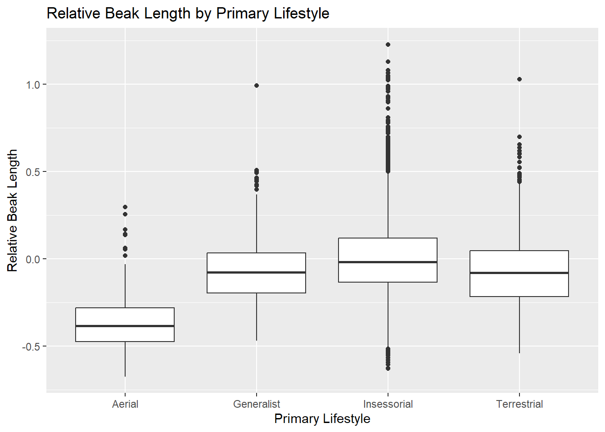
ggplot(d_passeriformes, aes(x = Trophic.Level, y = Relative_Beak_Length)) +geom_boxplot() +labs(title ="Relative Beak Length by Trophic Level",x ="Trophic Level", y ="Relative Beak Length")
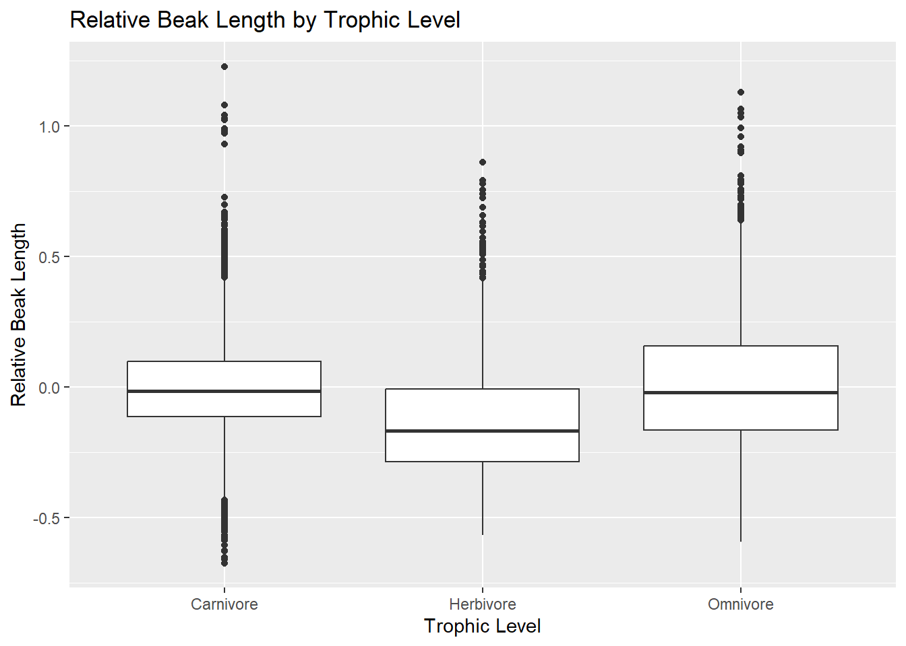
ggplot(d_passeriformes, aes(x =interaction(Primary.Lifestyle, Trophic.Level), y = Relative_Beak_Length)) +geom_boxplot() +labs(title ="Relative Beak Length by Primary Lifestyle and Trophic Level",x ="Primary Lifestyle and Trophic Level", y ="Relative Beak Length")
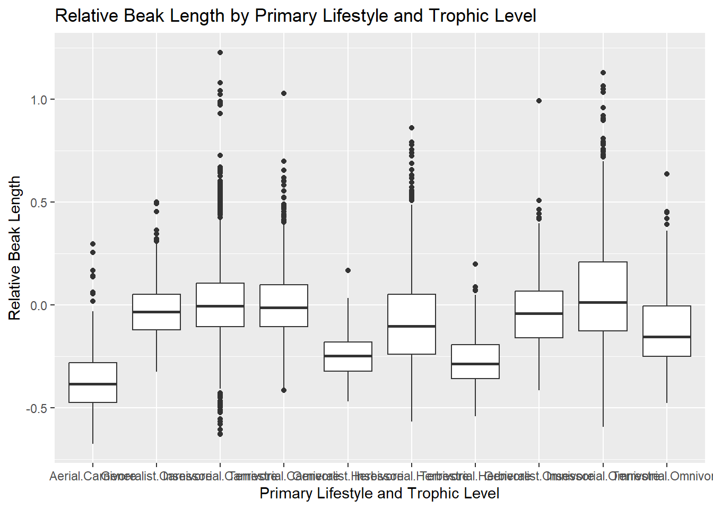
mp1 <-lm(Relative_Beak_Length ~ Primary.Lifestyle, data = d_passeriformes)summary(mp1)
Call:
lm(formula = Relative_Beak_Length ~ Primary.Lifestyle, data = d_passeriformes)
Residuals:
Min 1Q Median 3Q Max
-0.63098 -0.13765 -0.01698 0.11201 1.22436
Coefficients:
Estimate Std. Error t value Pr(>|t|)
(Intercept) -0.34896 0.02165 -16.12 <2e-16 ***
Primary.LifestyleGeneralist 0.27858 0.02312 12.05 <2e-16 ***
Primary.LifestyleInsessorial 0.35225 0.02188 16.10 <2e-16 ***
Primary.LifestyleTerrestrial 0.27838 0.02255 12.35 <2e-16 ***
---
Signif. codes: 0 '***' 0.001 '**' 0.01 '*' 0.05 '.' 0.1 ' ' 1
Residual standard error: 0.2154 on 6602 degrees of freedom
Multiple R-squared: 0.05534, Adjusted R-squared: 0.05492
F-statistic: 128.9 on 3 and 6602 DF, p-value: < 2.2e-16
Run a two-factor model to look at the association between relative beak length and both Primary.Lifestyle and Trophic.Level among the passeriforms. Based on the model output, what would you conclude about how relative beak length is related to these two variables?
mp3 <-aov(Relative_Beak_Length ~ Primary.Lifestyle + Trophic.Level, data = d_passeriformes)summary(mp3)
P values for both Primary.Lifestyle and Trophic.Level were 2e-16, meaning that both are significantly impacted by Relative_Beak_Length
Step 6
Finally, run an additional two-way model with the same dataset and predictors, but adding the possibility of an interaction term. To do this, you should modify your model formula using the colon operator (:) to specify the interaction, e.g., relative beak length ~ Primary.Lifestyle + Trophic.Level + Primary.Lifestyle:Trophic.Level. Based on the model output, what would you now conclude about how relative beak length is related to these two variables?
#Notes from classmp4 <-aov(Relative_Beak_Length ~Primary.Lifestyle + Trophic.Level + Primary.Lifestyle:Trophic.Level, data = d_passeriformes)summary(mp4)
Primary.Lifestyle:Trophic.Level had a p value of 2e-16 as well, so the effect of Primary.Lifestyle on Relative_Beak_Length is dependent on Trophic.Level.
Step 7
Use the interaction.plot() function to visualize the interaction between Primary.Lifestyle and Trophic.Level (see Module 20).